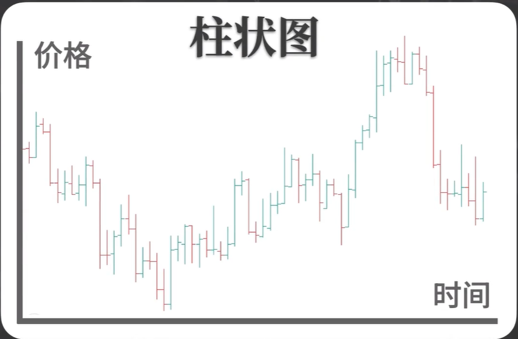
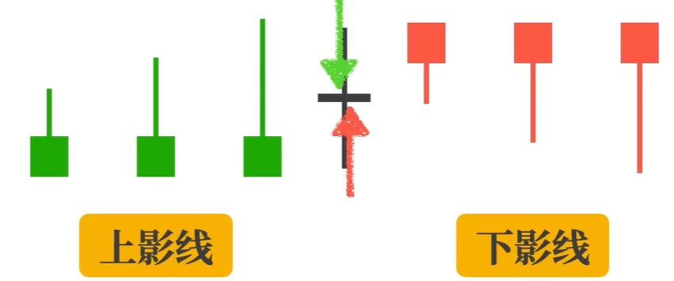
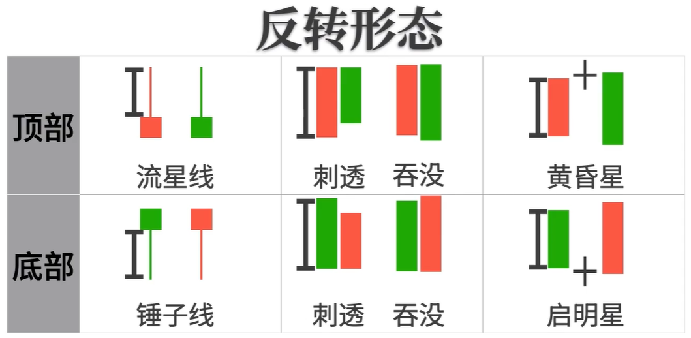
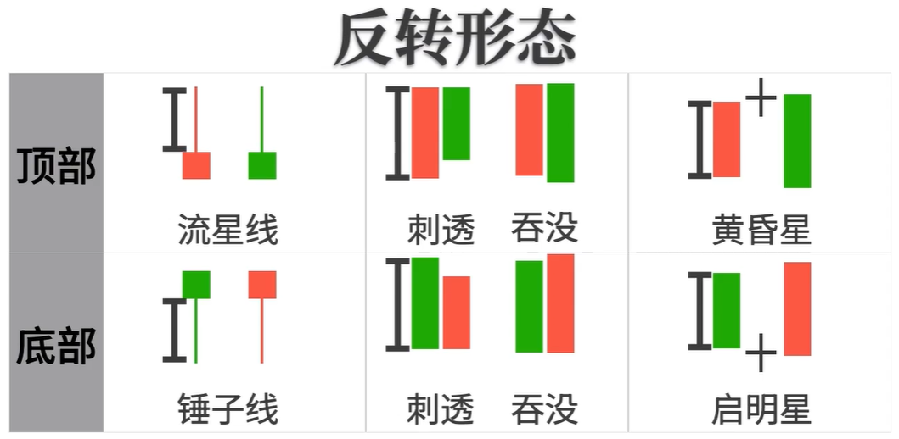

K线基础
为什么学习K线
- K线起源于日本德川幕府时代，最初用来记录米市行情和价格波动，因为形状像蜡烛，也被称为蜡烛图。K线图也是亚洲交易市场应用最为广泛的图表。K线图把抽象的价格波动具象化。其他的图表有折线图和柱状图。
- 折线图反映的就是价格随时间变化过程。
- 柱状图也是反映价格在时间维度上的变化,不同的是会按最小单位标注开盘价，收盘价，最高价，最低价，形状像竹子，也称竹节图。 

- K线图和柱状图类似，不同的是在单位时间上有了影线和实体的区分，更加直观。
K线的构成原理
- K线有1个原则和4个参数。
- 原则:固定时间框架,也就是多长时间绘制一次。(如 5min, 10min, 1h, 4h, 1D等)
- 参数:开盘价，收盘价，最高价，最低价
- 部分:影线，实体
- 分类:阴险，阳线
- 实例:绘制一天的K线图，找出开盘价，收盘价，最高价，最低价,开盘价高于收盘价是阴线，用绿色绘制实体和影线。
K线的应用
- 学会从K线中读取信息
K线实体是开盘价和收盘价的差值，差值越大，实体长度越长，实体长度是反映多空的强弱。实体越长的大阳线说明多头越强，实体越长的大阴线，说明空头越强。
影线反映的是多空的博弈，影线越长说明多空博弈越激烈。很长的上影线说明空头在最后的博弈中占据优势。很长的下影线说明多头在最后的博弈中占据优势。如果上下影线都很长，说明多空双手最后势均力敌。

不同长度的实体和不同长度的影线组合成了很多种K线。不同K线的组合就形成了K线的组合形态。应用最广的是三种形态，持续形态，整理形态和反转形态。
一根大阳线，后面跟着一根或几根实体很小的K线，就是持续形态。这种就是多头的持续形态，说明当前市场多头较强，空头较弱。接下来价格上涨的概率更高。
当出现连续的阳线阴线交替，或者连续的带有上下影线的K线，形成的就是整理形态。整理形态说明市场还在调整，没有明确的方向。
反转形态是K线中使用最广泛的形态。
单根K线的反转形态是实体很小，影线很长。在顶部出现的叫流星线，在底部出现的叫锤子线。
 双根K线的反转形态有刺透和吞没。特点是一根大阳线接着一根大阴线。当阴线的长度超过阳线的70%，叫刺透。当阴线的实体超过阳线的实体叫吞没。
在顶部出现的叫看跌刺透和看跌吞没。在底部出现的叫看涨刺透和看涨吞没。
三根K线的反转结构是一根大阳线，一根十字星线，一根大阴线。出现在顶部的叫黄昏星，出现在底部的叫启明星。
认识了这些形态还要知道如何比较不同反转形态的强度。重点在3个方面，1:突破 2:幅度 3:时间
第一看突破，反转形态形成后，如果最后的价格超过之前的价格，那强度更大。顶部的流星线如果实体是阴线，比阳线的反转强度大。
双根K线的反转形态，吞没比刺透的反转强度更大。
第二看幅度，同样是发生反转。流星线的影线越长，刺透，吞没和黄昏星的实体越长。发生反转之后，反转的强度越大。

第三看时间，如果是一样的幅度，那流星线是在一根K线的时间内就完成了反转动作。强度比刺透和吞没更大。以上就是我们经常用到的K线形态。
不管几根K线的反转形态本质都是反映了一个过程，就是行情的多空转换。如果这个转换过程在一根K线的时间内完成了，那形成的就是流星线或锤子线。
如果这个过程在2根K线内形成了，就是刺透和吞没。如果这个过程在3根或多根K线完成了，形成的就是黄昏星或启明星。
K线的反转形态是不是意味着行情的反转呢?并不是。
K线的反转形态描述的是价格的多空转换的动作。只是给我们的一个信号。信号一定要发生在相应的位置上才有意义。
举例:
我们根据这幅图画出一个压力位置，市场中是否存在这个压力位置，不一定，如果我们假定有这个压力位置，会发生什么？
当价格再次到达这个位置的时候，如果有多头认可这个位置的压力，会平掉自己的多头头寸，如果有空头认可这个位置的压力，会选择入场做空，然后价格在这个位置完成多空的转换，形成一个顶部的反转信号。形成的可能是流星线，可能是刺透或者吞没。也可能是黄昏星。是哪种形态不重要。重要的是完成了多空转换的动作。在关键的位置上出现了多空转换的动作，才验证了这个位置的压力作用。而在盘面中的压力作用，就是这样被验证出来的。
我们要寻找这些位置，要通过画线，然后观察这些位置上是否出现反转形态。所以反转形态的最大意义是什么？不是去预测行情是否发生反转，而是去验证关键位置的压力位或支撑位，这才是K线反转形态最主要的应用。
双根K线的反转形态有刺透和吞没。特点是一根大阳线接着一根大阴线。当阴线的长度超过阳线的70%，叫刺透。当阴线的实体超过阳线的实体叫吞没。
在顶部出现的叫看跌刺透和看跌吞没。在底部出现的叫看涨刺透和看涨吞没。
三根K线的反转结构是一根大阳线，一根十字星线，一根大阴线。出现在顶部的叫黄昏星，出现在底部的叫启明星。
认识了这些形态还要知道如何比较不同反转形态的强度。重点在3个方面，1:突破 2:幅度 3:时间
第一看突破，反转形态形成后，如果最后的价格超过之前的价格，那强度更大。顶部的流星线如果实体是阴线，比阳线的反转强度大。
双根K线的反转形态，吞没比刺透的反转强度更大。
第二看幅度，同样是发生反转。流星线的影线越长，刺透，吞没和黄昏星的实体越长。发生反转之后，反转的强度越大。

第三看时间，如果是一样的幅度，那流星线是在一根K线的时间内就完成了反转动作。强度比刺透和吞没更大。以上就是我们经常用到的K线形态。
不管几根K线的反转形态本质都是反映了一个过程，就是行情的多空转换。如果这个转换过程在一根K线的时间内完成了，那形成的就是流星线或锤子线。
如果这个过程在2根K线内形成了，就是刺透和吞没。如果这个过程在3根或多根K线完成了，形成的就是黄昏星或启明星。
K线的反转形态是不是意味着行情的反转呢?并不是。
K线的反转形态描述的是价格的多空转换的动作。只是给我们的一个信号。信号一定要发生在相应的位置上才有意义。
举例:
我们根据这幅图画出一个压力位置，市场中是否存在这个压力位置，不一定，如果我们假定有这个压力位置，会发生什么？
当价格再次到达这个位置的时候，如果有多头认可这个位置的压力，会平掉自己的多头头寸，如果有空头认可这个位置的压力，会选择入场做空，然后价格在这个位置完成多空的转换，形成一个顶部的反转信号。形成的可能是流星线，可能是刺透或者吞没。也可能是黄昏星。是哪种形态不重要。重要的是完成了多空转换的动作。在关键的位置上出现了多空转换的动作，才验证了这个位置的压力作用。而在盘面中的压力作用，就是这样被验证出来的。
我们要寻找这些位置，要通过画线，然后观察这些位置上是否出现反转形态。所以反转形态的最大意义是什么？不是去预测行情是否发生反转，而是去验证关键位置的压力位或支撑位，这才是K线反转形态最主要的应用。
- 总结一下：
K线描述的是客观的价格走势。
K线形态起到的是信号作用。
信号的使用要结合关键的位置。
上涨的持续形态要出现在上涨的波段中才有价值。
价格的反转形态要出现在关键的高低点或关键的支撑阻力位才有意义。
利用反转形态去验证关键位置的支撑阻力是K线反转形态最主要的应用，而不是去预测行情反转。
K线的拓展
- 行情的涨跌是随机的，K线绘制的时间框架是固定的，那么行情涨跌的波段在K线固定的时间框架下实际上是被随机分割的，所以才会有很多人在常见的K线形态基础上，又总结出很多的衍生形态。由于K线的绘制是忽略中间过程的，天图的一根大阳线，可能对应的是1小时周期的一波连续上涨，也可能是一段起伏很大的连续上涨。这些信息都被K线过滤掉。所以我们为什么要理解K线的原理和本质？应为当我们理解了K线的反转形态，本质是完成了价格多空转换的这个动作，要获取这个信息，我们要观察大周期的K线形态，同样也可以观察小周期的波段，并且在小周期波段中可以获取更多的信息。这里的大小周期是相对的，一般主要的观察周期是1h，4h和天图。观察1h的K线要比观察天图获取更多的信息。
第二点K线的规则其实就是通过固定时间来比较幅度的方式，得到大小不同的K线，然后各种K线组合成了不同形态。
用这个视角我们反过来观察刚才讲到的几种K线形态。
持续形态实际上就是一根动能很强的K线，和一根或几根动能很弱的K线组合成的形态。
反转形态实际上就是一根动能很强的K线和一根动能同样很强的反向K线组合成的形态。
这两种形态的共同点都成一个很强的动能开始，然后接下来看相同时间或几倍时间的动能情况，如果对应的是很弱势的动能，那形成的就是持续形态，如果是强势的反向动能，形成的就是反向形态， 理解了这些，我们就跳出了K线的时间框架，不按照固定时间来切分行情的波动，但是以固定时间来比较价格幅度的思路，再来看下小周期的波段。

第一步先找的当前行情的主力动能，主力动能有2个条件，第1是突破了高低点，第2跟近期的行情比较幅度要相对较大，然后看主力动能从开始到结束一共运行了多长时间。等待相同时间后看调整动能的幅度。
a.如果价格运行相同时间后，价格调整的幅度很小，
那形成的就是一个持续结构，价格按照原来的方向运行的几率会比较大。
b.如果价格调整的幅度很大，那形成的可能是一个潜在的反转结构。
我们将调整幅度很大的反向动能，再作为主力动能，看他运行的时间，
再等待价格运行相同的时间，如果调整的幅度也很大，那市场就形成了一个整理结构。如果调整的幅度很小，
那可能形成的可能就是头肩顶的反转结构，
通过这样的方式，我们就跳出了K线的时间框架，紧紧的跟随市场的主力动能，通过识别市场的结构，快速分析市场的走势，这也是我自己在使用的分析市场的方法。